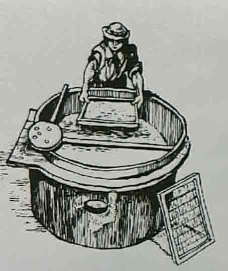
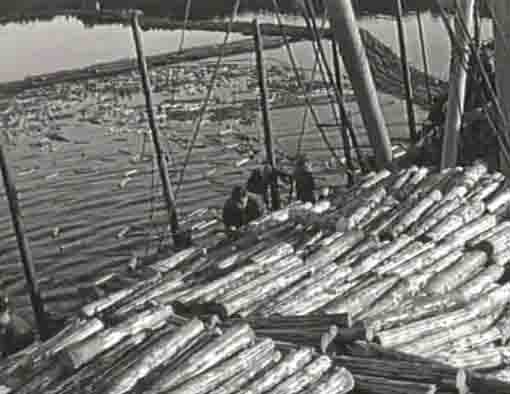
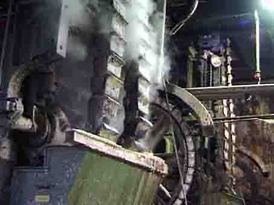
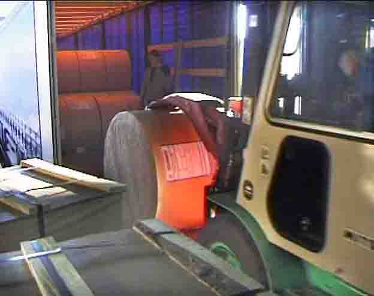

Hunsfos
Hunsfos fabrikker i Vennesla
Her følger en bildeserie i lav oppløsning, hentet fra tidligere videofilm-opptak, gjort av Torvald Slettebø.
Vepsene var de første papirfabrikanter. De tygget plantedeler til en grøt, og spyttet den ut som papir. Dette vepsebolet uvanlig digert.
Rives det i stykker, kan vi se de tynne papirflakene det er bygd opp av. Papir isolerer godt om vinteren.
Kineserne var de første mennesker som laget papir. De brukte mest tekstilfibre, men etter en spesiell teknikk laget de også papir av ris.
Dette er en tysk tegning. Tekstilfibre er revet, og blandet ut til ei suppe i ei svær bøtte. Derav navnet bøttepapir. Rammen nederst til høyre har utspent en tynn duk, som suppe-vannet kan sive ut gjennom, og etterlate et fast lag, papiret.
Vatnestrøm skole gjør det samme. De har fluenetting oppspent på en treramme, og dypper den i oppløst avispapir. Det er brukt kulørt ukeblad-papir her, derfor mørk farge.
De river aviser i småbiter, for liksom baklengs å lage den papirmassen som en papirfabrikk brukes i sin papirframstilling.
Papirbitene skal først ligge lenge i vann og bløtes. Så blir blandingen kokt og finmalt i miksmasteren. Og så kan den hentes opp i rammen med finmasket duk. Wire, heter den duken i papirfabrikken.
Ennå er det nylagede papiret skjørt og tåler lite. Det må løsnes forsiktig fra wiren, og legges mot håndkleet. Så må det ligge i press til neste dag.
Og så har vi laget papir. Bøttepapir. I gammel norsk papirfremstilling, f.eks. ved Jegersberg og Papirmøllevann, brukte de tekstilfiller, kluter, og papiret kaltes derfor klutepapir.
Men i dag brukes tømmer, tre. I et gammelt bilde ser vi lossing av kubber ved Ålefjær. De skal med taubane til Hunsfos, og slipes eller kuttes til fliser. Slipet blir mekanisk tremasse, og flisene kokes til cellulose.
Kubbene tømmes i haug ved fabrikken, og venter på videre behandling.

Dette er skurtømmer som skal til sagbruk. Men jernbanen, den gang Setesdalsbanen, ble mye brukt til frakting av tømmer fra Byglandsfjord til Hunsfos. Ellers var fløting vanlig transportmåte.

Men så kom tømmerbilen. Denne modellen var i sin tid et moderne vidunder. Og det var bare til nød at den tids veier var fremkommelige for den.

I dag brukes gjennomført mekanisering, til hogst, barking, og framkjøring. Skal skogbruket lønne seg, må det drives rasjonelt. Det kan by på problemer i kronglete sørlandsk landskap.
Tømmerlasset blir veid, og fuktighetsmålt. Fabrikken vil jo ikke betale for ekstra høyt funtighetsinnhold.
Kraftig redskap laster av tømmerbilen i svære jafser, og flytter tømmerlasten til lagerhaugene. Det skal være jevn tilgang på råstoff, så det må være et rikelig lager.
Dette er en slipemskin, av den typen fabrikken bruker. Mannen nederst ved selve slipesteinen, antyder størrelsen. Øverst legges kubbene i manuelt, før stålbeltene presser dem ned mot slipesteinen.
Kubbene kommer seilene i vannrenna, og løftes med lasso og heisekran inn i slipemaskinen bak.
Vi ser de svare beltene som presser kubbene nedover til sliping.
Ferdig slip transporteres videre. Tresliping er en billig fremstilling, mye billigere enn cellulosekoking, men gir ikke så rivesterkt papir. Det brukes helst i blanding med cellulose, gjerne til avispapir.
Slipemasse oppløst i vann henger dårlig på gaffelen. Fibrene er for korte. I skåla til høyre har vi kjemisk fremstilt cellulose. Den er også hvitere, fordi bindestoffet i trestammen, ligninet, er kokt bort.
Slipemasse: Istykkerrevne treceller. Og cellebiter henger også sammen i klumper. Det blir ikke sterkt papir av slikt.
Cellulosefibre henger godt med på gaffelen
i mikroskopbildet ser vi hvorfor: Cellene er lange og uskadde. Og de er skikkelig reingjort. Da gulner ikke papiret siden i lyset.

Øverste etasje i sulfit-cellulose-kokeriet. Midt i bildet ser vi nærmest til høyre det stengte lokket på en av kokekjelene. Bildet er hentet fra et filmopptak i 2001. Noen minutter etterpå, rettet vi kameraet ut av vinduet til venstre -
- og der bygger de et behandlingsanlegg for sulfat-cellulose, som skal avløse sulfiten, fordi den er bedre. Den må kjøpes fra en annen fabrikk, og fraktes til Vennesla på bil.
Bunnen av en av de store sulfit-kjelene, som nå, i 2003, ikke eksisterer lenger. Det var i sin tid et topp moderne anlegg. Men så kom det nye og bedre metoder, og så kunne det ikke lenger konkurrere.
Kostbart rustfritt stål i kjeler og rør. Imponerende dimensjoner. Men altså foreldet og avlegs. Og nå demontert.
Vi får la det åpne lokket på sulfit-kjeletoppen stå som symbol for en ærefull fortid, og godta at industriutviklingen må gå videre.
Og så er vi inne i selve papirmaskinhallen, og ser ned på viren, det endeløse båndet av det som erstatter skoleelevenes fluenetting. Her slippes papirsuppa ut i en jevn strøm, samtidig som båndet rister sidelengs for å jevne ut papirbanen.
Båndet er så tynt at vi kan se gjennom det, og det trekkes over mange støttebjelker, så vannet skal få tid til å sive igjennom, og etterlate papirbanen.
Disse bjelkene suger også, og vannet spruter ned. Tilbake ligger cellulosefibrene, kanskje blandet med slipemasse, og litt hvit leire, som skal gjøre det ugjennomsiktig.
Så begynner det sin tørkevandring, og da ligger det på et filtbelte, fordi det ennå er for svakt til å bære seg alene.
Sylindrene er hule, og oppvarmet med damp. Og hele denne vandringen er nødvendig for at papiret skal tørke og bli fast.
Flere tørkesylindre.Papiret kjøres også gjennom andre valser, som presser og sliper det, så det får den overflatekvalitet som akkurat denne produksjonen etterstreber.
Kvaliteten kontrolleres fortløpende, og vaktmannskap følger fabrikasjonsprosessen på dataskjermen. Det kommer melding blant annet fra -
- denne vognen, som stadig kjører frem og tilbake under papiret som passerer, og gir beskjed m kvalitet og tykkelse. Det godtas ikke store variasjoner.
Akkurat da disse opptakene ble gjort, var det vaktskifte, og neste skift ble gjort oppmerksom på at det hadde vært så vidt antydning til tykkelsesvariasjon. Så vær på vakt!
En såkalt Yankey-papirmaskin. Den har bare en eneste tørkesylinder, men den er til gjengjeld så svær at den rekker fra golv til tak. Papiret må jo også her ha lang nok vei å gå, så det kan rekke å tørke.
Men resten av Yankey-maskinen ligner den forrige papirmaskinen. Wirebeltet er nokså likt.

Så rulles ferdig papir opp. Fra Yankey-maskinen kommer papir som er glatt på den siden som snudde mot sylinderen. Ellers kan gjerne begge side gjøres glatte, mellom slipende stålsylindre.
Papiret ble skåret i mer håndterlige bredder i det det kom ut av maskinen.
Slammet fra den gamle sulfit-prosessen ble skilt fra, i dette anlegget. Den kjemikalieholdige vesken ble sendt til sjøs i rør i Otra -
- mens slammet kunne brukes, kanskje til hagejord.
Avisene bruker papiret i ruller sik de kommer fra papirmaskinen. Men til mange andre formål må det kuttes til ark.
Det gjøres i denne maskinen. Papiret fra rullene har nettopp passert en roterende kniv som kutter arkene i nøyaktige lengder, før de løper videre på dette transportbeltet -
- og blir til en stabel.
Så skal de sendes ut til kundene, som baller -
- eller innpakket som rull.
Kontaineren venter.

Og så bærer det ut i verden, der det verdifulle Hunsfos-papiret skal brukes til mange formål.